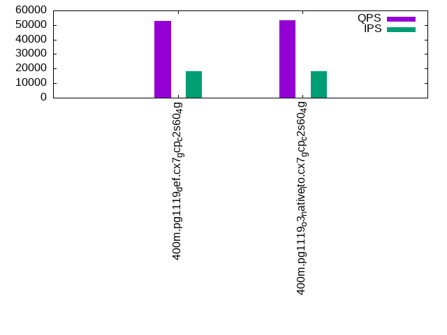

This is a report for the insert benchmark with 400M docs and 20 client(s). It is generated by scripts (bash, awk, sed) and Tufte might not be impressed. An overview of the insert benchmark is here and a short update is here. Below, by DBMS, I mean DBMS+version.config. An example is my8020.c10b40 where my means MySQL, 8020 is version 8.0.20 and c10b40 is the name for the configuration file.
The test server is a c2-standard-60 from GCP with 30 cores, hyperthreading disabled, 240G RAM and 3T from XFS and SW RAID 0 striped over 8 local NVMe drives. The benchmark was run with 20 clients and there were 1 or 2 connections per client (1 for queries, 1 for inserts). The benchmark loads 400M rows without secondary indexes, creates secondary indexes, loads another 400M rows then does 3 read+write tests for one hour each that do queries as fast as possible with 100, 500 and then 1000 writes/second/client concurrent with the queries. Each read-write test runs for 1800 seconds. The test was configured to use a table per client. The database fits in the OS page cache but not the DBMS buffer pool. Clients and the DBMS share one server. The per-database configs are in the per-database subdirectories here.
The tested DBMS are:
The numbers are inserts/s for l.i0 and l.i1, indexed docs (or rows) /s for l.x and queries/s for q*.2. The values are the average rate over the entire test for inserts (IPS) and queries (QPS). The range of values for IPS and QPS is split into 3 parts: bottom 25%, middle 50%, top 25%. Values in the bottom 25% have a red background, values in the top 25% have a green background and values in the middle have no color. A gray background is used for values that can be ignored because the DBMS did not sustain the target insert rate. Red backgrounds are not used when the minimum value is within 80% of the max value.
| dbms | l.i0 | l.x | l.i1 | q100.1 | q500.1 | q1000.1 |
|---|---|---|---|---|---|---|
| 400m.pg1119_def.cx7_gcp_c2s60_4g | 1388889 | 1835321 | 23072 | 103244 | 77728 | 52847 |
| 400m.pg1119_o3_native_lto.cx7_gcp_c2s60_4g | 1428571 | 1961274 | 23049 | 109038 | 77910 | 53513 |
This lists the average rate of inserts/s for the tests that do inserts concurrent with queries. For such tests the query rate is listed in the table above. The read+write tests are setup so that the insert rate should match the target rate every second. Cells that are not at least 95% of the target have a red background to indicate a failure to satisfy the target.
| dbms | q100.1 | q500.1 | q1000.1 |
|---|---|---|---|
| pg1119_def.cx7_gcp_c2s60_4g | 1976 | 9885 | 18027 |
| pg1119_o3_native_lto.cx7_gcp_c2s60_4g | 1976 | 9890 | 18036 |
| target | 2000 | 10000 | 20000 |
l.i0: load without secondary indexes. Graphs for performance per 1-second interval are here.
Average throughput:
Insert response time histogram: each cell has the percentage of responses that take <= the time in the header and max is the max response time in seconds. For the max column values in the top 25% of the range have a red background and in the bottom 25% of the range have a green background. The red background is not used when the min value is within 80% of the max value.
| dbms | 256us | 1ms | 4ms | 16ms | 64ms | 256ms | 1s | 4s | 16s | gt | max |
|---|---|---|---|---|---|---|---|---|---|---|---|
| pg1119_def.cx7_gcp_c2s60_4g | 63.456 | 35.412 | 1.047 | 0.049 | 0.026 | 0.010 | 0.997 | ||||
| pg1119_o3_native_lto.cx7_gcp_c2s60_4g | 63.091 | 35.848 | 0.970 | 0.046 | 0.034 | 0.011 | 0.450 |
Performance metrics for the DBMS listed above. Some are normalized by throughput, others are not. Legend for results is here.
ips qps rps rmbps wps wmbps rpq rkbpq wpi wkbpi csps cpups cspq cpupq dbgb1 dbgb2 rss maxop p50 p99 tag 1388889 0 70 3.6 9893.9 580.5 0.000 0.003 0.007 0.428 206614 60.5 0.149 13 38.3 103.2 NA 0.997 78649 9489 400m.pg1119_def.cx7_gcp_c2s60_4g 1428571 0 54 3.2 10074.9 594.0 0.000 0.002 0.007 0.426 224502 59.8 0.157 13 38.3 103.2 NA 0.450 81410 14384 400m.pg1119_o3_native_lto.cx7_gcp_c2s60_4g
l.x: create secondary indexes.
Average throughput:
Performance metrics for the DBMS listed above. Some are normalized by throughput, others are not. Legend for results is here.
ips qps rps rmbps wps wmbps rpq rkbpq wpi wkbpi csps cpups cspq cpupq dbgb1 dbgb2 rss maxop p50 p99 tag 1835321 0 8107 253.0 6367.1 754.1 0.004 0.141 0.003 0.421 140270 21.4 0.076 3 73.5 177.9 NA 0.191 NA NA 400m.pg1119_def.cx7_gcp_c2s60_4g 1961274 0 13878 269.4 5385.8 760.2 0.007 0.141 0.003 0.397 125614 21.6 0.064 3 73.5 176.1 NA 0.454 NA NA 400m.pg1119_o3_native_lto.cx7_gcp_c2s60_4g
l.i1: continue load after secondary indexes created. Graphs for performance per 1-second interval are here.
Average throughput:
Insert response time histogram: each cell has the percentage of responses that take <= the time in the header and max is the max response time in seconds. For the max column values in the top 25% of the range have a red background and in the bottom 25% of the range have a green background. The red background is not used when the min value is within 80% of the max value.
| dbms | 256us | 1ms | 4ms | 16ms | 64ms | 256ms | 1s | 4s | 16s | gt | max |
|---|---|---|---|---|---|---|---|---|---|---|---|
| pg1119_def.cx7_gcp_c2s60_4g | nonzero | 0.032 | 88.386 | 11.580 | 0.003 | 0.438 | |||||
| pg1119_o3_native_lto.cx7_gcp_c2s60_4g | 0.014 | 88.351 | 11.631 | 0.004 | 0.368 |
Performance metrics for the DBMS listed above. Some are normalized by throughput, others are not. Legend for results is here.
ips qps rps rmbps wps wmbps rpq rkbpq wpi wkbpi csps cpups cspq cpupq dbgb1 dbgb2 rss maxop p50 p99 tag 23072 0 70133 725.0 62774.9 606.4 3.040 32.179 2.721 26.912 132833 12.3 5.757 160 165.8 246.8 NA 0.438 1199 599 400m.pg1119_def.cx7_gcp_c2s60_4g 23049 0 70546 728.7 62723.6 605.9 3.061 32.373 2.721 26.917 133167 12.1 5.777 157 165.8 246.1 0.0 0.368 1199 599 400m.pg1119_o3_native_lto.cx7_gcp_c2s60_4g
q100.1: range queries with 100 insert/s per client. Graphs for performance per 1-second interval are here.
Average throughput:
Query response time histogram: each cell has the percentage of responses that take <= the time in the header and max is the max response time in seconds. For max values in the top 25% of the range have a red background and in the bottom 25% of the range have a green background. The red background is not used when the min value is within 80% of the max value.
| dbms | 256us | 1ms | 4ms | 16ms | 64ms | 256ms | 1s | 4s | 16s | gt | max |
|---|---|---|---|---|---|---|---|---|---|---|---|
| pg1119_def.cx7_gcp_c2s60_4g | 67.656 | 32.154 | 0.184 | 0.006 | nonzero | 0.023 | |||||
| pg1119_o3_native_lto.cx7_gcp_c2s60_4g | 69.977 | 29.838 | 0.179 | 0.006 | nonzero | 0.060 |
Insert response time histogram: each cell has the percentage of responses that take <= the time in the header and max is the max response time in seconds. For max values in the top 25% of the range have a red background and in the bottom 25% of the range have a green background. The red background is not used when the min value is within 80% of the max value.
| dbms | 256us | 1ms | 4ms | 16ms | 64ms | 256ms | 1s | 4s | 16s | gt | max |
|---|---|---|---|---|---|---|---|---|---|---|---|
| pg1119_def.cx7_gcp_c2s60_4g | 0.008 | 99.450 | 0.542 | 0.101 | |||||||
| pg1119_o3_native_lto.cx7_gcp_c2s60_4g | 0.011 | 98.931 | 1.058 | 0.123 |
Performance metrics for the DBMS listed above. Some are normalized by throughput, others are not. Legend for results is here.
ips qps rps rmbps wps wmbps rpq rkbpq wpi wkbpi csps cpups cspq cpupq dbgb1 dbgb2 rss maxop p50 p99 tag 1976 103244 82553 715.9 6270.7 73.8 0.800 7.100 3.174 38.255 474950 39.5 4.600 115 166.6 263.0 0.0 0.023 5194 4683 400m.pg1119_def.cx7_gcp_c2s60_4g 1976 109038 76296 734.4 6276.4 74.4 0.700 6.897 3.177 38.566 495053 40.3 4.540 111 166.6 262.7 0.0 0.060 5580 4923 400m.pg1119_o3_native_lto.cx7_gcp_c2s60_4g
q500.1: range queries with 500 insert/s per client. Graphs for performance per 1-second interval are here.
Average throughput:
Query response time histogram: each cell has the percentage of responses that take <= the time in the header and max is the max response time in seconds. For max values in the top 25% of the range have a red background and in the bottom 25% of the range have a green background. The red background is not used when the min value is within 80% of the max value.
| dbms | 256us | 1ms | 4ms | 16ms | 64ms | 256ms | 1s | 4s | 16s | gt | max |
|---|---|---|---|---|---|---|---|---|---|---|---|
| pg1119_def.cx7_gcp_c2s60_4g | 60.970 | 37.684 | 1.215 | 0.125 | 0.006 | nonzero | 0.110 | ||||
| pg1119_o3_native_lto.cx7_gcp_c2s60_4g | 60.551 | 38.066 | 1.254 | 0.123 | 0.006 | 0.056 |
Insert response time histogram: each cell has the percentage of responses that take <= the time in the header and max is the max response time in seconds. For max values in the top 25% of the range have a red background and in the bottom 25% of the range have a green background. The red background is not used when the min value is within 80% of the max value.
| dbms | 256us | 1ms | 4ms | 16ms | 64ms | 256ms | 1s | 4s | 16s | gt | max |
|---|---|---|---|---|---|---|---|---|---|---|---|
| pg1119_def.cx7_gcp_c2s60_4g | 0.002 | 91.782 | 8.216 | nonzero | 0.265 | ||||||
| pg1119_o3_native_lto.cx7_gcp_c2s60_4g | 0.002 | 92.072 | 7.926 | 0.244 |
Performance metrics for the DBMS listed above. Some are normalized by throughput, others are not. Legend for results is here.
ips qps rps rmbps wps wmbps rpq rkbpq wpi wkbpi csps cpups cspq cpupq dbgb1 dbgb2 rss maxop p50 p99 tag 9885 77728 89264 864.2 29390.5 306.0 1.148 11.385 2.973 31.696 415372 38.5 5.344 149 171.6 247.1 0.0 0.110 4139 1982 400m.pg1119_def.cx7_gcp_c2s60_4g 9890 77910 93006 876.1 29470.3 306.4 1.194 11.514 2.980 31.728 418763 37.5 5.375 144 171.6 246.9 0.0 0.056 4109 2030 400m.pg1119_o3_native_lto.cx7_gcp_c2s60_4g
q1000.1: range queries with 1000 insert/s per client. Graphs for performance per 1-second interval are here.
Average throughput:
Query response time histogram: each cell has the percentage of responses that take <= the time in the header and max is the max response time in seconds. For max values in the top 25% of the range have a red background and in the bottom 25% of the range have a green background. The red background is not used when the min value is within 80% of the max value.
| dbms | 256us | 1ms | 4ms | 16ms | 64ms | 256ms | 1s | 4s | 16s | gt | max |
|---|---|---|---|---|---|---|---|---|---|---|---|
| pg1119_def.cx7_gcp_c2s60_4g | 53.728 | 42.403 | 3.284 | 0.548 | 0.038 | nonzero | 0.085 | ||||
| pg1119_o3_native_lto.cx7_gcp_c2s60_4g | 54.014 | 42.158 | 3.247 | 0.542 | 0.037 | nonzero | 0.082 |
Insert response time histogram: each cell has the percentage of responses that take <= the time in the header and max is the max response time in seconds. For max values in the top 25% of the range have a red background and in the bottom 25% of the range have a green background. The red background is not used when the min value is within 80% of the max value.
| dbms | 256us | 1ms | 4ms | 16ms | 64ms | 256ms | 1s | 4s | 16s | gt | max |
|---|---|---|---|---|---|---|---|---|---|---|---|
| pg1119_def.cx7_gcp_c2s60_4g | 0.003 | 82.715 | 17.280 | 0.001 | 0.282 | ||||||
| pg1119_o3_native_lto.cx7_gcp_c2s60_4g | 0.004 | 82.769 | 17.226 | 0.001 | 0.276 |
Performance metrics for the DBMS listed above. Some are normalized by throughput, others are not. Legend for results is here.
ips qps rps rmbps wps wmbps rpq rkbpq wpi wkbpi csps cpups cspq cpupq dbgb1 dbgb2 rss maxop p50 p99 tag 18027 52847 95729 935.7 52046.5 528.5 1.811 18.131 2.887 30.022 363340 37.9 6.875 215 185.4 262.2 0.0 0.085 2749 1502 400m.pg1119_def.cx7_gcp_c2s60_4g 18036 53513 95405 933.1 51992.9 528.2 1.783 17.855 2.883 29.987 366499 37.4 6.849 210 185.4 262.1 0.0 0.082 2797 1455 400m.pg1119_o3_native_lto.cx7_gcp_c2s60_4g
l.i0: load without secondary indexes
Performance metrics for all DBMS, not just the ones listed above. Some are normalized by throughput, others are not. Legend for results is here.
ips qps rps rmbps wps wmbps rpq rkbpq wpi wkbpi csps cpups cspq cpupq dbgb1 dbgb2 rss maxop p50 p99 tag 1388889 0 70 3.6 9893.9 580.5 0.000 0.003 0.007 0.428 206614 60.5 0.149 13 38.3 103.2 NA 0.997 78649 9489 400m.pg1119_def.cx7_gcp_c2s60_4g 1428571 0 54 3.2 10074.9 594.0 0.000 0.002 0.007 0.426 224502 59.8 0.157 13 38.3 103.2 NA 0.450 81410 14384 400m.pg1119_o3_native_lto.cx7_gcp_c2s60_4g
l.x: create secondary indexes
Performance metrics for all DBMS, not just the ones listed above. Some are normalized by throughput, others are not. Legend for results is here.
ips qps rps rmbps wps wmbps rpq rkbpq wpi wkbpi csps cpups cspq cpupq dbgb1 dbgb2 rss maxop p50 p99 tag 1835321 0 8107 253.0 6367.1 754.1 0.004 0.141 0.003 0.421 140270 21.4 0.076 3 73.5 177.9 NA 0.191 NA NA 400m.pg1119_def.cx7_gcp_c2s60_4g 1961274 0 13878 269.4 5385.8 760.2 0.007 0.141 0.003 0.397 125614 21.6 0.064 3 73.5 176.1 NA 0.454 NA NA 400m.pg1119_o3_native_lto.cx7_gcp_c2s60_4g
l.i1: continue load after secondary indexes created
Performance metrics for all DBMS, not just the ones listed above. Some are normalized by throughput, others are not. Legend for results is here.
ips qps rps rmbps wps wmbps rpq rkbpq wpi wkbpi csps cpups cspq cpupq dbgb1 dbgb2 rss maxop p50 p99 tag 23072 0 70133 725.0 62774.9 606.4 3.040 32.179 2.721 26.912 132833 12.3 5.757 160 165.8 246.8 NA 0.438 1199 599 400m.pg1119_def.cx7_gcp_c2s60_4g 23049 0 70546 728.7 62723.6 605.9 3.061 32.373 2.721 26.917 133167 12.1 5.777 157 165.8 246.1 0.0 0.368 1199 599 400m.pg1119_o3_native_lto.cx7_gcp_c2s60_4g
q100.1: range queries with 100 insert/s per client
Performance metrics for all DBMS, not just the ones listed above. Some are normalized by throughput, others are not. Legend for results is here.
ips qps rps rmbps wps wmbps rpq rkbpq wpi wkbpi csps cpups cspq cpupq dbgb1 dbgb2 rss maxop p50 p99 tag 1976 103244 82553 715.9 6270.7 73.8 0.800 7.100 3.174 38.255 474950 39.5 4.600 115 166.6 263.0 0.0 0.023 5194 4683 400m.pg1119_def.cx7_gcp_c2s60_4g 1976 109038 76296 734.4 6276.4 74.4 0.700 6.897 3.177 38.566 495053 40.3 4.540 111 166.6 262.7 0.0 0.060 5580 4923 400m.pg1119_o3_native_lto.cx7_gcp_c2s60_4g
q500.1: range queries with 500 insert/s per client
Performance metrics for all DBMS, not just the ones listed above. Some are normalized by throughput, others are not. Legend for results is here.
ips qps rps rmbps wps wmbps rpq rkbpq wpi wkbpi csps cpups cspq cpupq dbgb1 dbgb2 rss maxop p50 p99 tag 9885 77728 89264 864.2 29390.5 306.0 1.148 11.385 2.973 31.696 415372 38.5 5.344 149 171.6 247.1 0.0 0.110 4139 1982 400m.pg1119_def.cx7_gcp_c2s60_4g 9890 77910 93006 876.1 29470.3 306.4 1.194 11.514 2.980 31.728 418763 37.5 5.375 144 171.6 246.9 0.0 0.056 4109 2030 400m.pg1119_o3_native_lto.cx7_gcp_c2s60_4g
q1000.1: range queries with 1000 insert/s per client
Performance metrics for all DBMS, not just the ones listed above. Some are normalized by throughput, others are not. Legend for results is here.
ips qps rps rmbps wps wmbps rpq rkbpq wpi wkbpi csps cpups cspq cpupq dbgb1 dbgb2 rss maxop p50 p99 tag 18027 52847 95729 935.7 52046.5 528.5 1.811 18.131 2.887 30.022 363340 37.9 6.875 215 185.4 262.2 0.0 0.085 2749 1502 400m.pg1119_def.cx7_gcp_c2s60_4g 18036 53513 95405 933.1 51992.9 528.2 1.783 17.855 2.883 29.987 366499 37.4 6.849 210 185.4 262.1 0.0 0.082 2797 1455 400m.pg1119_o3_native_lto.cx7_gcp_c2s60_4g
Insert response time histogram
256us 1ms 4ms 16ms 64ms 256ms 1s 4s 16s gt max tag 0.000 63.456 35.412 1.047 0.049 0.026 0.010 0.000 0.000 0.000 0.997 pg1119_def.cx7_gcp_c2s60_4g 0.000 63.091 35.848 0.970 0.046 0.034 0.011 0.000 0.000 0.000 0.450 pg1119_o3_native_lto.cx7_gcp_c2s60_4g
TODO - determine whether there is data for create index response time
Insert response time histogram
256us 1ms 4ms 16ms 64ms 256ms 1s 4s 16s gt max tag 0.000 0.000 nonzero 0.032 88.386 11.580 0.003 0.000 0.000 0.000 0.438 pg1119_def.cx7_gcp_c2s60_4g 0.000 0.000 0.000 0.014 88.351 11.631 0.004 0.000 0.000 0.000 0.368 pg1119_o3_native_lto.cx7_gcp_c2s60_4g
Query response time histogram
256us 1ms 4ms 16ms 64ms 256ms 1s 4s 16s gt max tag 67.656 32.154 0.184 0.006 nonzero 0.000 0.000 0.000 0.000 0.000 0.023 pg1119_def.cx7_gcp_c2s60_4g 69.977 29.838 0.179 0.006 nonzero 0.000 0.000 0.000 0.000 0.000 0.060 pg1119_o3_native_lto.cx7_gcp_c2s60_4g
Insert response time histogram
256us 1ms 4ms 16ms 64ms 256ms 1s 4s 16s gt max tag 0.000 0.000 0.000 0.008 99.450 0.542 0.000 0.000 0.000 0.000 0.101 pg1119_def.cx7_gcp_c2s60_4g 0.000 0.000 0.000 0.011 98.931 1.058 0.000 0.000 0.000 0.000 0.123 pg1119_o3_native_lto.cx7_gcp_c2s60_4g
Query response time histogram
256us 1ms 4ms 16ms 64ms 256ms 1s 4s 16s gt max tag 60.970 37.684 1.215 0.125 0.006 nonzero 0.000 0.000 0.000 0.000 0.110 pg1119_def.cx7_gcp_c2s60_4g 60.551 38.066 1.254 0.123 0.006 0.000 0.000 0.000 0.000 0.000 0.056 pg1119_o3_native_lto.cx7_gcp_c2s60_4g
Insert response time histogram
256us 1ms 4ms 16ms 64ms 256ms 1s 4s 16s gt max tag 0.000 0.000 0.000 0.002 91.782 8.216 nonzero 0.000 0.000 0.000 0.265 pg1119_def.cx7_gcp_c2s60_4g 0.000 0.000 0.000 0.002 92.072 7.926 0.000 0.000 0.000 0.000 0.244 pg1119_o3_native_lto.cx7_gcp_c2s60_4g
Query response time histogram
256us 1ms 4ms 16ms 64ms 256ms 1s 4s 16s gt max tag 53.728 42.403 3.284 0.548 0.038 nonzero 0.000 0.000 0.000 0.000 0.085 pg1119_def.cx7_gcp_c2s60_4g 54.014 42.158 3.247 0.542 0.037 nonzero 0.000 0.000 0.000 0.000 0.082 pg1119_o3_native_lto.cx7_gcp_c2s60_4g
Insert response time histogram
256us 1ms 4ms 16ms 64ms 256ms 1s 4s 16s gt max tag 0.000 0.000 0.000 0.003 82.715 17.280 0.001 0.000 0.000 0.000 0.282 pg1119_def.cx7_gcp_c2s60_4g 0.000 0.000 0.000 0.004 82.769 17.226 0.001 0.000 0.000 0.000 0.276 pg1119_o3_native_lto.cx7_gcp_c2s60_4g